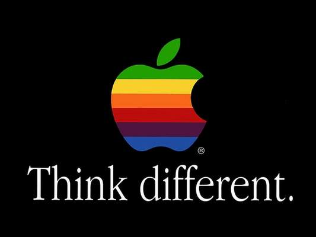

Giới Thiệu
ĐÂY LÀ CUỐN TIỂU SỬ ĐỘC NHẤT VÔ NHỊ VỀ STEVE JOBS
TRÍCH LỜI TÁC GIẢ CUỐN TIỂU SỬ BÁN CHẠY NHẤT VỀ BELAMIN FRANKLIN VÀ ALBERT EINSTEIN.
ựa trên hơn 40 cuộc phỏng vấn trực tiếp Steve Jobs, cùng với một số buổi trò chuyện với hơn 100 thành viên gia đình, bạn bè, các đối tác, đối thủ cạnh tranh và các đồng nghiệp của Jobs trong suốt hai năm qua, Walter Isaacson đã viết nên một câu chuyện mê hoặc lòng người về một cuộc đời đầy ắp những thăng trầm, về một cá tính lập dị đầy sức mê hoặc của một doanh nhân sáng tạo với khát khao vươn tới sự hoàn mỹ, và về công cuộc cách mạng hóa dữ dội sáu ngành công nghiệp: máy tính cá nhân, điện ảnh hoạt họa, âm nhạc, điện thoại, máy tính bảng và xuất bản điện tử.
Trong lúc nước Mỹ đang tìm cách duy trì lợi thế cạnh tranh sáng chế, Jobs nổi lên như một biểu tượng tối cao cho tài sáng chế cũng như óc sáng tạo đầy tính vận dụng. Jobs biết, để tạo nên một giá trị đích thực trong thế kỷ XXI này không có gì khác ngoài sự kết nối sức sáng tạo với công nghệ, ông đã xây dựng nên một công ty nơi những dòng chảy của óc sáng tạo được kết hợp với sự điêu luyện tuyệt vời của kỹ thuật.
Mặc dù Jobs hợp tác với chúng tôi trong việc cho ra đời cuốn sách này nhưng ông không đòi hỏi quyền kiểm soát cũng như hạn chế những thông tin đưa ra, thậm chí là quyền được đọc trước khi cuốn sách xuất bản. Ông cũng luôn khuyến khích người thân quen hãy nói một cách thành thật. Và Jobs luôn cư xử một cách thẳng thắn, đôi khi là tàn nhẫn đối với cả đồng nghiệp và đối thủ. Họ đã chia sẻ cái nhìn chân thực về những đam mê, sự hoàn mỹ, sự cầu toàn, tính nghệ thuật, nỗi ám ảnh, sự khắt khe trong cách điều hành đã hình thành lên phong cách kinh doanh độc đáo ở Jobs và kết quả đã tạo ra những dòng sản phẩm đầy tính đột phá.
Với tính gàn dở của mình, Jobs có thể dồn ép những người xung quanh khiến họ nổi giận và tuyệt vọng. Nhưng cá tính và những sản phẩm của ông thì lại liên quan mật thiết với nhau, đó cũng là xu hướng mà phần mềm và phần cứng của Apple hướng đến, như là một phần của một thể thống nhất. Câu chuyện của ông là những bài học có tính truyền bá và răn dạy về sự đổi mới, vai trò, đường lối lãnh đạo, và các giá trị.
 Walter Isaacson, CEO của Viện Aspen, từng là chủ tịch của Mạng tin tức truyền hình cáp (CNN) và Tổng biên tập của tạp chí Time. Ông là tác giả của cuốn "Einstein: His Life and Universe' (Tiểu sử Einstein: Cuộc đời và vũ trụ), "Benjamin Franklin: An American Life" (Benjamin Franklin - một cuộc đời Mỹ), và "Kissinger: A Biographỳ" (Tiểu sử Kissinger) và ông cũng cùng với Evan Thomas viết cuốn "The Wise Men: Six Friends and the World They Made" (Tạm dịch: Sáu người bạn và thế giới họ tạo nên). Hiện ông đang sống cùng vợ ở Washington, D.C.
Walter Isaacson, CEO của Viện Aspen, từng là chủ tịch của Mạng tin tức truyền hình cáp (CNN) và Tổng biên tập của tạp chí Time. Ông là tác giả của cuốn "Einstein: His Life and Universe' (Tiểu sử Einstein: Cuộc đời và vũ trụ), "Benjamin Franklin: An American Life" (Benjamin Franklin - một cuộc đời Mỹ), và "Kissinger: A Biographỳ" (Tiểu sử Kissinger) và ông cũng cùng với Evan Thomas viết cuốn "The Wise Men: Six Friends and the World They Made" (Tạm dịch: Sáu người bạn và thế giới họ tạo nên). Hiện ông đang sống cùng vợ ở Washington, D.C.
Những con người có đủ điên khùng để nghĩ rằng họ có thể thay đổi thế giới là những người dám làm đến cùng.

“Nghĩ khác” (Think different)
chiến dịch thương mại của Apple, 1997
Cuốn sách này được ms bỏ rất nhiều công sức sửa chữa và sưu tầm tài liệu để đăng lên. ms cũng không ích kỷ gì (nếu ích kỷ thì đã không thành lập vnthuquan), ai muốn đăng lại ở đâu cũng được, chỉ cần ghi rõ nguồn là ok rồi. nhưng duy nhất có một cá biệt không nên lấy tác phẩm của vnthuquan về đăng trên trang của mình nữa vì kẻ này rất ích kỷ, tài nguyên của họ thì tìm mọi cách đóng chặt, cài khoá đủ kiểu không muốn chia sẻ cho cộng đồng. nhưng lại vô vnthuquan copy vô tư. tự nhiên như ruồi. thật đáng ghét. Hy vọng cái kẻ đáng ghét đó tự biết mình là ai. Nếu đã không muốn chia sẻ thì vnthuquan cũng không hoan nghênh cái kiểu có cưa nhưng cất kỹ rồi sai con sang nhà hàng xóm mượn cưa.